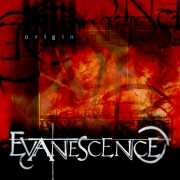
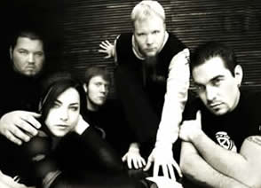
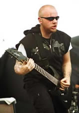

No ano de 1994, em Little Rock, Arkansas, inicia-se
a história do Evanescence. Ben Moody, com apenas 14 anos
de idade, participava de um acampamento para jovens promovido
pela igreja local. Enquanto Ben acompanhava uma partida de basquete,
percebeu do outro lado do ginásio, num palco, uma garota
cantando e tocando ao piano a introdução da música
I'd Do Anything for Love, do músico americano
Meat Loaf.
A
jovem, com apenas 13 anos, que havia mudado-se recentemente com
sua família para Little Rock, chamava-se Amy Lynn Lee.
Seus pais, preocupados com o seu isolamento social, haviam encaminhado
a garota para aquele acampamento, afim de que pudesse fazer amizades
e integrar-se entre os jovens cristãos da cidade. Mas Amy
passava horas ao piano e pouco se interessava em conhecer os demais
participantes.
Ao ouvi-la tocando, Ben Moody atravessou a quadra
em direção à garota, ao aproximar-se, apresentou-se.
Logo começaram a conversar; Amy mostrou a Ben algumas músicas
de sua autoria e concluíram que tinham a mesma tendência
musical. Assim, Ben convenceu Amy a formarem uma banda.
A banda, que até aquele momento era formada
por apenas Ben, que fazia guitarras, baixo e arranjos eletrônicos;
e Amy, responsável pelo piano e vocais; foi batizada Evanescence,
que significa dissipar ou desaparecer.
Influenciados pelo som de artistas como Danny
Elfman, Type
O Negative, Portishead e Sarah McLachlan,
uma das primeiras composições gravadas pela dupla
chama-se Understanding, que é definida por eles
mesmos como "um gótico ridículo de 7 minutos".
Mesmo assim, uma emissora de rádio de Little Rock, a KABF,
passou a tocá-la num programa co-apresentado por Brad Caviness.
Através desta divulgação, o Evanescence foi
ganhando reputação e logo tornaram-se conhecidos
em Little Rock. Apesar disso, por falta de condições
para pagar outros músicos, a dupla ainda não tinha
feito nenhuma apresentação ao vivo.
Entre 97 e 98, o Evanescence lança demos
que levavam apenas quatro faixas, incluindo October.
O primeiro EP, lançado em dezembro de 1998 pela gravadora
Bigwig Enterprises, leva o próprio nome da banda: Evanescence;
e conta com as participações de William Boyd, Matt
Outlaw e Rocky Gray.
Este
trabalho, que trazia apenas sete faixas, foi lançado na
primeira apresentação ao vivo realizada em um bar
chamado Vino’s, em Litlle Rock. Todas as 100 cópias
disponibilizadas para venda esgotaram-se na mesma noite da apresentação.
Com a popularidade fortalecida, porém, conhecida apenas
regionalmente, a banda produz e lança em agosto do ano
seguinte, mais um EP.
Whisper – Sound Asleep, além
de Give unto Me, traz mais cinco faixas. Mas a gravadora
produziu apenas 50 cópias. A partir deste momento, o Evanescence
já contava com músicos para suas apresentações
ao vivo: David Hodges, John LeCompt e Rocky Gray. O próximo
trabalho já começa a ser preparado.
A gravadora Bigwig Enterprises decide investir
nos jovens e talentosos músicos de Little Rock. O repertório
foi cuidadosamente montado com treze faixas, entre elas, My
Immortal e Imaginary. Origin foi produzido
por Brad Caviness e lançado em novembro de 2000 numa edição
com 2500 cópias. Além de Ben e Amy, David Hodges,
como baterista, tornou-se integrante oficial. Também participaram
das gravações Willian Boyd, Bruce Fitzhugh, Stephanie
Pierce e um grupo composto por quatro vozes femininas que fez
coral em Field of Innocence.
Desse modo, o Evanescence, aos poucos, conquistava
seu espaço e uma maturidade musical das bandas veteranas.
Mas ainda faltava um golpe de sorte que lhes desse a oportunidade
de se projetar por toda a América. Isto aconteceu quando
o produtor e executivo da gravadora Wind-Up Records, de Nova York,
Peter Mathews, conheceu o trabalho da banda em um estúdio
de Memphis, Tennessee. Era o detalhe que faltava. Peter apresentou
os jovens músicos à gravadora e o contrato foi assinado.
Wind-Up e Evanescence trabalharam durante dois anos montando o
repertório do primeiro álbum.
Fallen, gravado em Los Angeles, trouxe
onze faixas em seu repertório, a maioria composta pelo
trio Amy Lee, Ben Moody e David Hodges. Nas gravações
deste trabalho, David assumiu o piano e teclado. A maior parte
da produção ficou por conta de Dave Fortmann, mas
Ben e Jay Baumgardner também cooperaram em Bring me
to life e My Immortal, respectivamente. Além
dos músicos da banda, Francesco DiCosmo e Josh Freese participaram
da gravação.
Fallen
foi o disco que definitivamente lançou o Evanescence para
o mundo e que rendeu muitos dólares e reconhecimento. Neste
momento, a formação já estava estabilizada
e pronta para percorrer o mundo em turnês.
Em apenas seis semanas o álbum vendeu mais
de 1 milhão de cópias e conquistou o disco de platina.
As músicas Bring me to life e My Immortal
foram inclusas na trilha sonora do filme O Demolidor (Daredevil),
fato que contribuiu muito para a popularidade da banda. Ainda,
as quatro primeiras faixas de Fallen ganharam uma versão
videoclipe: Going Under, Bring me to life, My Immortal
e Everybodys’s Fool.
Porém, o Evanescence ainda tinha sua imagem
vinculada à música cristã, tanto que Fallen
também era vendido em lojas especializadas neste segmento.
Após algumas declarações em entrevistas concedidas
pelos membros da banda, ficou claro que a ligação
com música religiosa tinha sido desfeita. Este fato provocou
uma frustração entre alguns fãs. A gravadora
Wind-Up divulgou uma nota aconselhando que as lojas cristãs
recolhessem os álbuns do Evanescence e que as rádios
não executassem as músicas da banda em programas
voltados para o público cristão.
No dia 24 de outubro de 2003, durante uma turnê
européia, Ben Moody anuncia seu desligamento da banda.
A notícia foi recebida com perplexidade e decepção
pelos fãs. Os motivos que levaram Ben a tomar esta atitude
não ficaram muito claros. Por um tempo, os integrantes
evitavam tocar no assunto. Mas um tempo depois, Amy declarou que
a "sintonia" entre eles já não era como
antes e, para o bem da banda, um deles tinha que sair. Amy disse
também que Ben foi mesquinho ao abandoná-los em
plena turnê. Para seu lugar, John LeCompt foi convidado
para acompanhá-los até o fim das apresentações.
Logo depois Terry Balsamo assumiu o lugar de John, sendo efetivado
no início de 2004. Ben deu continuidade em sua carreira
musical produzindo e gravando com outros artistas.
No
ano de 2004 a popularidade do Evanescence foi ampliada e a banda
mostrou à mídia e aos fãs que a saída
de Ben não atrapalhou a carreira. Até fevereiro,
somente nos Estados Unidos, Fallen já tinha vendido
mais de 4 milhões de cópias. Premiações
como os diversos Grammy europeus; além de várias
indicações e outros tantos prêmios conquistados
na imprensa especializada, fizeram a rotina da banda naquele ano.
Porém, boatos em torno do suposto namoro de Amy e Ben,
contribuíram, negativamente, para uma maior exposição
do Evanescence na mídia.
Em novembro de 2004, foi lançado pela mesma
gravadora um CD/DVD gravado em Paris, intitulado Anywhere
but Home. O DVD contém treze faixas e os quatro videoclipes;
além de quase uma hora de bastidores. O CD contém
as treze faixas do DVD e um bônus, a música Missing
(gravada em estúdio).
Neste mesmo ano tiveram início os boatos
sobre o próximo álbum. No início de 2005,
a música Breathe no More é inclusa na trilha
sonora do filme Elektra. Este foi um ano difícil
para o Evanescence. Inicialmente, o americano Trevin Skeens processa
a gravadora, afirmando que comprou o DVD Anywhere but home
e se sentiu ofendido com a musica Thoughtless. Skeens
exigiu uma indenização de 57 mil dólares.
Em seguida, os produtores do filme As crônicas de Nárnia:
o leão, a feiticeira e o guarda roupa recusam uma
música que a banda fez para a trilha sonora. "Eu
escrevi uma música para o filme, que eu amo muito, mas
ela foi rejeitada pela produção" comentou
Amy Lee no Evboard, um fórum virtual americano. "Eles
disseram que a música era ‘muito dark’ e ‘muito
épica’, eu pensei sobre isso e decidi que não
vou prejudicar minha arte por nada".
Em seguida, Amy processa seu empresãrio
Dennis Rider, por assedio sexual e o guitarrista Terry Balsamo
tem um derrame cerebral. Apesar dele ter se recuperado rapidamente,
isto adiou o lançamento do albúm seguinte. Apenas
no início de 2006, a banda confirma o lançamento
para o dia 3 de outubro e divulga seu nome: The Open Door.
Pouco antes de seu lançamento, Will Boyd decide sair da
banda, afirmando que precisa passar mais tempo com a familia.
Ele é substituido às pressas por Tim McCord. Pouco
depois, a banda lança o primeiro single deste cd: Call
Me When You’re Sober.
Não há uma classificação
exata para incluir o som produzido pelo Evanescence. Percebe-se
características de Metal, vários elementos de música
eletrônica e letras que, por alguns, são consideradas
góticas. Talvez uma boa definição para o
som do Evanescence, esteja na declaração de Amy:
"O que eu trago para a banda é a idéia
e a vibração da coisa romântica/ clássica/orquestral,
as cordas, o coral, os vocais de fundo celestiais, e o piano.
A banda traz o rock, as guitarras e bateria. Juntos criamos algo
que é muito original".
Por
Spectrum
Contribuição
de Pedro Evans
Downloads
Disponíveis: